Newest first. Times are from the first prompt (T+0:00:00), as in TRANSCRIPT.md.
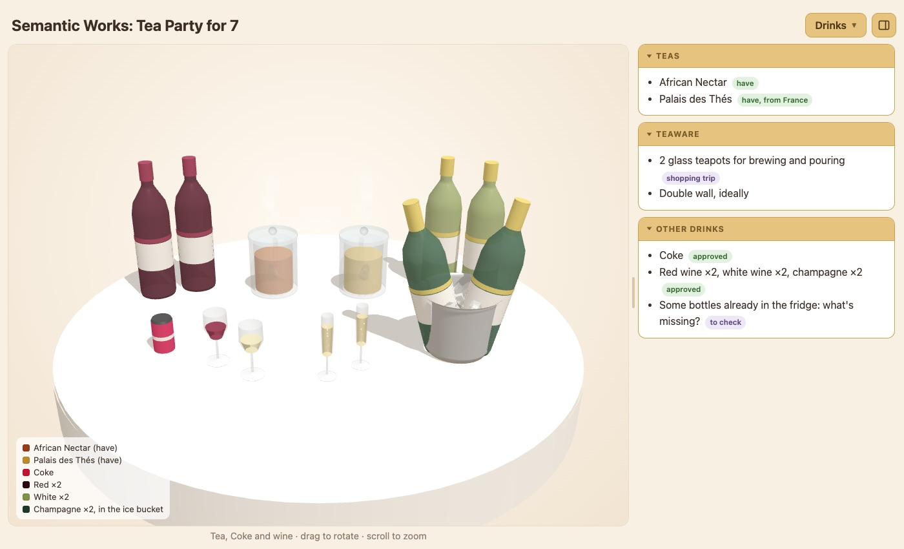
#115 T+1:27:01 · drinksauto, after page change#113 T+1:27:01 · tableauto, after page change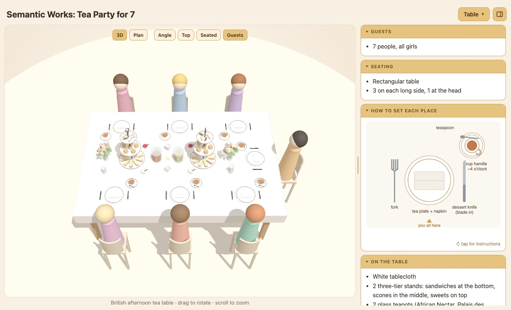
#109 T+1:25:49 · tableauto, after page change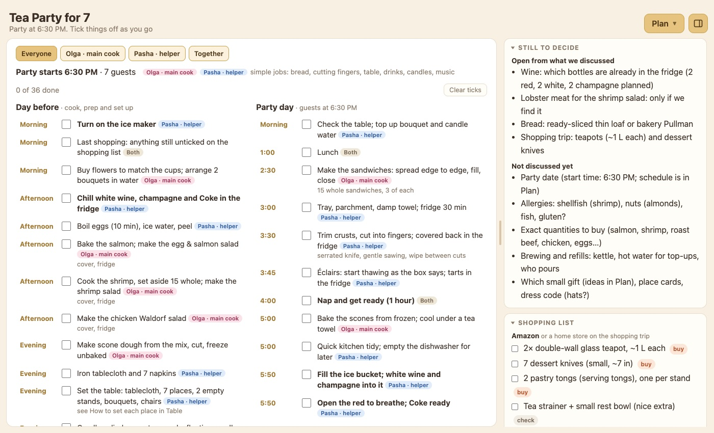
#74 T+1:18:04 · planauto, after page change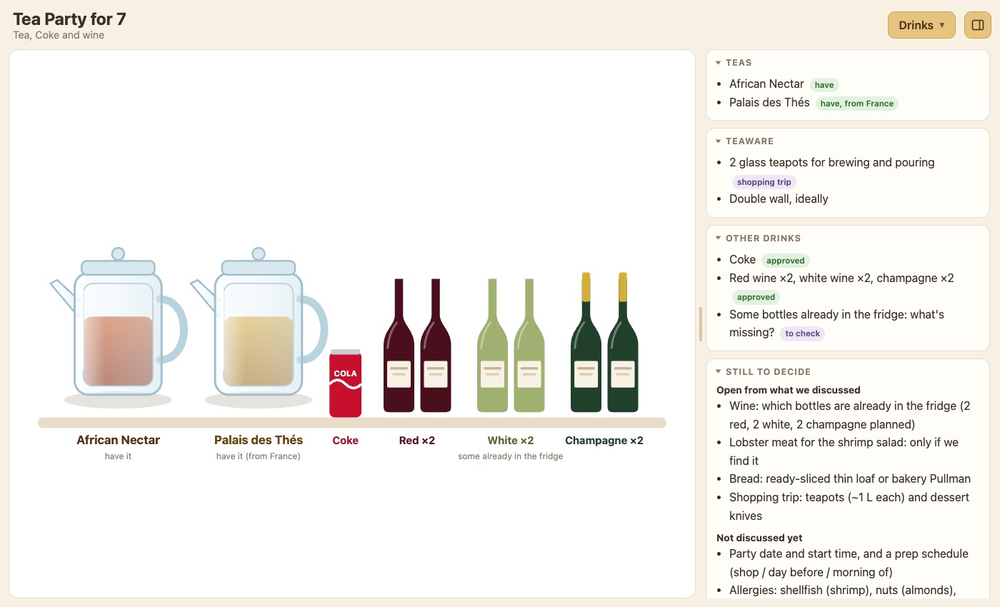
#33 T+0:58:04 · drinksauto, after page change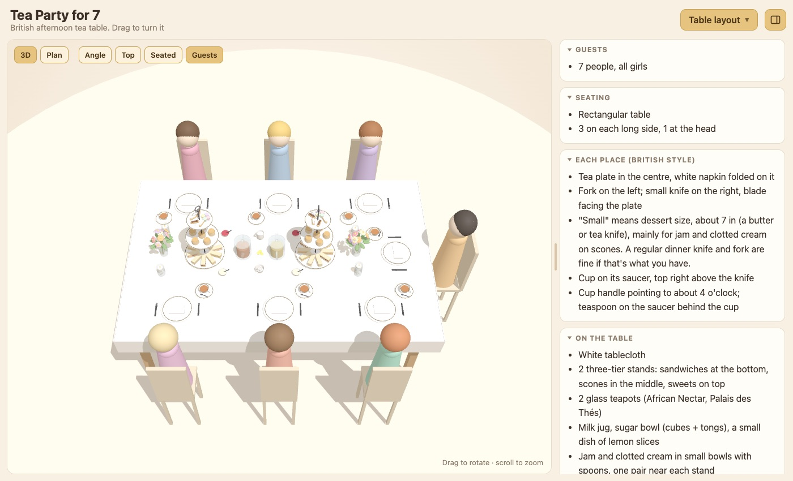
#14 T+0:44:29 · tableSaucer with gold rim; camera kept across reloads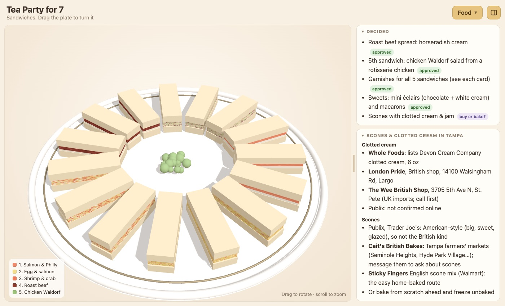
#11 T+0:44:01 · foodFirst automatic snapshot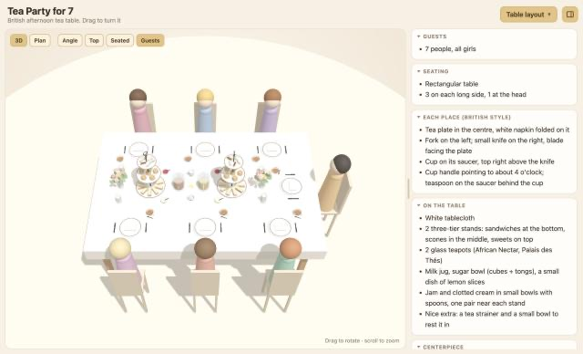
#8 T+0:37:07 · table3D British table, fixed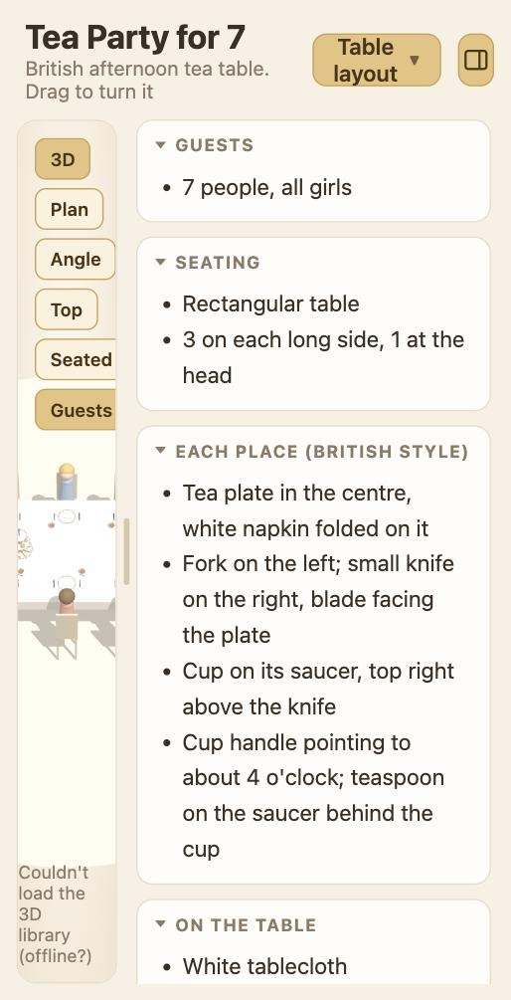
#7 T+0:36:31 · tableFirst 3D table (half drawn because of a bug, narrow pane)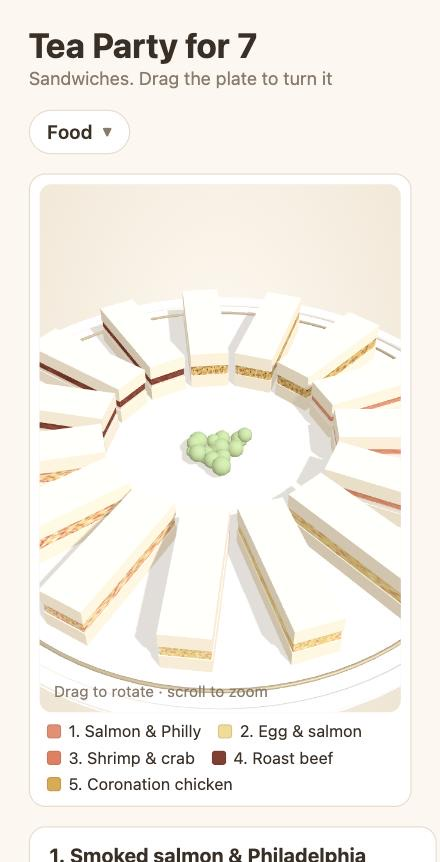
#6 T+0:15:58 · foodFood view: first 3D sandwich plate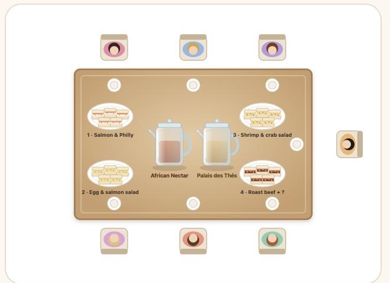
#4 T+0:06:00 · tableFour sandwich platters on the table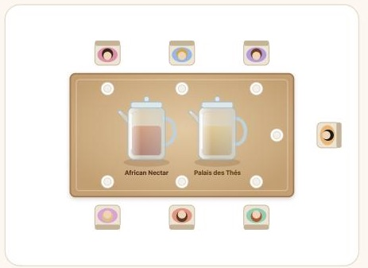
#3 T+0:03:45 · tableRectangular table: 3 + 3 + 1 at the head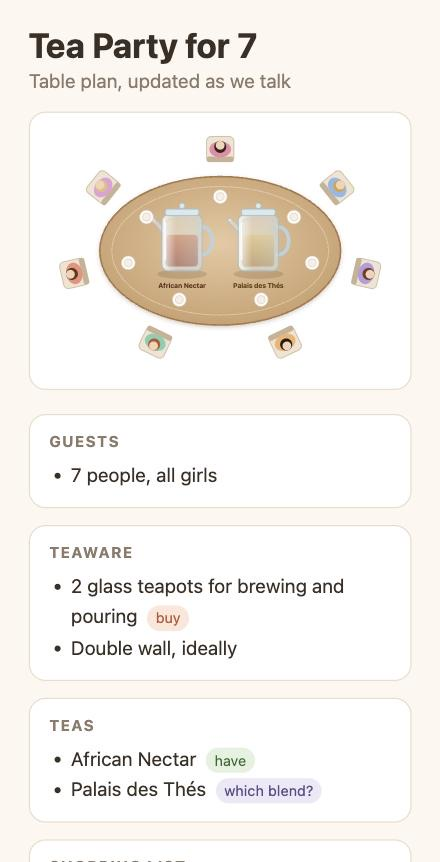
#2 T+0:02:25 · tableOval table, 7 girls, two glass teapots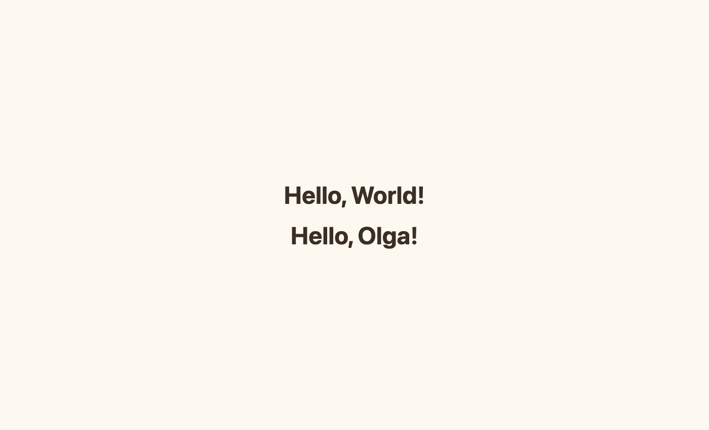
#1 T+0:01:00 · helloHello World / Hello Olga (recreated later; no screenshot was taken then)